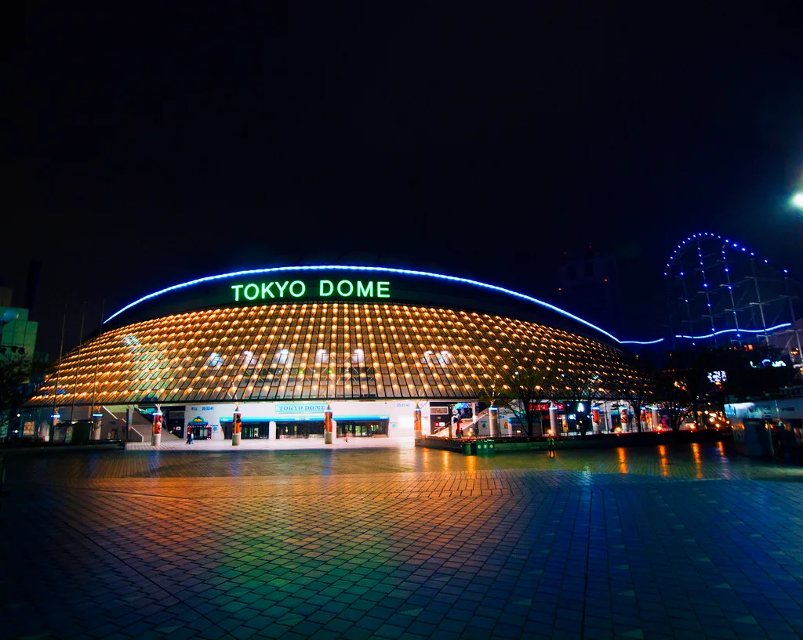

역대급 폭염에 KBO 사상 초유 전경기 취소…관중 쓰러져 CPR까지
프로야구 KBO리그가 기록적인 폭염 앞에 결국 멈춰 섰다. KBO는 5일 1군과 2군(퓨처스리그) 예정 경기를 모두 취소한다고 공식 발표한 데 이어, 6일 경기까지 이틀 연속 전면 취소를 결정했다. 리그 역사상 폭염을 이유로 하루 이상 모든 경기가 중단된 것은 이번이 처음이다. 발단은 지난 4일 인천 SSG랜더스필드에서 열린 LG 트윈스와 SSG 랜더스의 경기였다. 경기 막판 20대 남성 관중이 의식을 잃고 쓰러져 심정지 증세를 보였고, 현장에서 심폐소생술(CPR)과 자동심장충격기(AED)를 이용한 응급조치 끝에 다행히 의식을 되찾았다. 같은 날 인천에서만 온열질환 의심 사례가 25건 접수된 것으로 집계됐다.
KBO 사무국은 관중과 선수 안전이 임계점에 다다랐다고 판단해 이례적인 결단을 내렸다. 통상 폭염 상황에서도 개별 구장 단위로 경기 시간을 조정하거나 짧은 우천 순연에 준하는 조치를 취하는 데 그쳤던 것과 달리, 이번에는 전 구단 일정을 일괄 중단하는 방식을 택했다. 사무국 관계자는 "현재의 폭염 수준에서는 부분적 대응만으로 안전을 담보하기 어렵다고 판단했다"는 취지로 설명한 것으로 전해졌다. 10개 구단 관계자들 사이에서도 관중석 응급 상황이 재발할 수 있다는 위기감이 컸던 것으로 알려졌다.

KBO는 6일 10개 구단 단장과 한국프로야구선수협회 관계자가 참여하는 긴급 실행위원회를 열어 폭염 관련 종합 운영 방침을 논의한다. 안건에는 폭염 단계별 경기 취소 기준, 야간 경기 시작 시간 조정, 관중석 냉방·급수 시설 확충, 응급의료 대응 체계 강화 등이 폭넓게 오를 것으로 예상된다. 공교롭게도 KBO는 이번 사태 하루 전 별도의 폭염 대응 규정을 발표했으나, 현장에서 곧바로 심각한 응급 상황이 발생하면서 해당 규정을 원점에서 다시 검토해야 한다는 목소리가 커졌다. 일부에서는 경기력 저하와 안전 문제를 함께 고려한 보다 정교한 기준이 필요하다는 지적도 나온다.
이번 조치로 이틀간 예정됐던 1군 경기와 퓨처스리그 일정이 모두 순연되면서 잔여 시즌 일정 조정도 불가피해졌다. 통상 우천 순연 경기는 이후 더블헤더나 여분 일정으로 소화하는 경우가 많은데, 폭염으로 인한 대규모 순연은 전례가 많지 않아 KBO와 각 구단은 대체 일정 편성에 고심하고 있는 것으로 전해졌다. 시즌 막바지 순위 경쟁이 진행 중인 만큼 경기 수 유지와 선수단 컨디션 관리를 동시에 고려해야 하는 상황이다.

이번 사태를 계기로 폭염이 스포츠 현장의 안전 문제로 본격 부상했다는 평가가 나온다. 앞서 경남 양산이 42.5도까지 치솟는 등 전국적으로 폭염중대경보가 잇따라 발령되는 상황에서, 실외 스포츠 경기 운영 방식 자체를 재검토해야 한다는 공감대가 커지고 있다. 야구뿐 아니라 다른 실외 스포츠 종목에서도 유사한 안전 기준 정비 논의가 이어질 가능성이 제기된다.
KBO는 6일 실행위원회 결과에 따라 이후 경기 재개 시점과 폭염 단계별 대응 매뉴얼을 확정해 발표할 예정이다. 사무국은 관중과 선수단의 안전을 최우선으로 하되, 남은 정규시즌 일정을 원활히 소화할 수 있는 균형점을 찾겠다는 입장이다. 다만 폭염이 당분간 이어질 것으로 예보된 만큼, 이번 결정이 일회성 조치에 그치지 않고 앞으로도 유사한 상황에서 반복될 수 있다는 관측도 나온다.